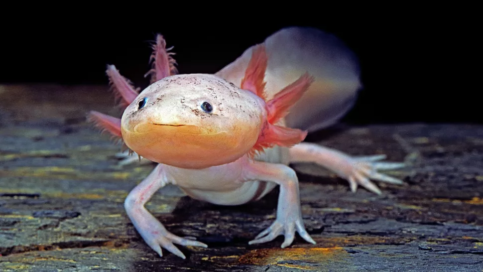

Axoloti weirdos can regrow their brains, and a new map reveals their regeneration secrets
The axolotl(Ambystoma mexicanum) is an aquatic salamander renowned for its ability to regenerate its spinal cord, heart and limbs.These amphibians also readily make new neurons throughout their lives. In 1964, researchers observed that adult axolotls could regenerate parts of their brains , even if a large section was completely removed. But one study found that axolotl brain regeneration has a limited ability to rebuild original tissue structure.
So how perfectly can axolotl's regenerate their brains after injury?
As a researcher studying regeneration at the cellular level, I and my colleagues in the Treutlein Lab at ETH Zurich and the Tanaka Lab at the Institute of Molecular Pathology in Vienna wondered whether axolotls are able to regenerate all the different cell types in their brain, including the connections linking one brain region to another. In our recently published study, we created an atlas of the cells that make up a part of the axolotl brain, shedding light on both the way it regenerates and brain evolution across species.
Why look at cells?
Different cell types have different functions. They are able to specialize in certain roles because they each express different genes. Understanding what types of cells are in the brain and what they do helps clarify the overall picture of how the brain works. It also allows researchers to make comparisons across evolution and try to find biological trends across species.
One way to understand which cells are expressing which genes is by using a technique called single-cell RNA sequencing (scRNA-seq). This tool allows researchers to count the number of active genes within each cell of a particular sample. This provides a “snapshot” of the activities each cell was doing when it was collected.
This tool has been instrumental in understanding the types of cells that exist in the brains of animals. Scientists have used scRNA-seq in fish,reptiles, mice and even humans. But one major piece of the brain evolution puzzle has been missing: amphibians.